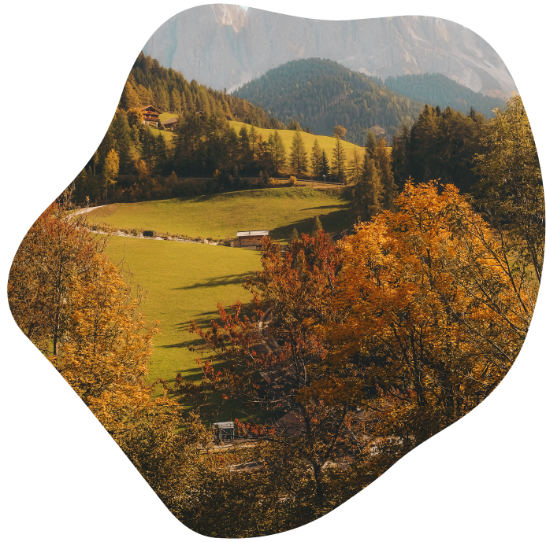
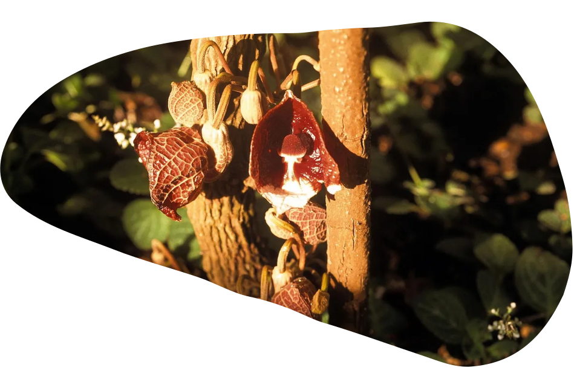

PlantAwareness
De mens lijdt aan plandblindheid
althans dit is wat botanisten James Wandersee en Elisabeth Schussler
het noemen
Dat is een onvermogen om het belang van planten voor de biosfeer te
zien, om de tijdschaal waarop planten leven en bewegen waar te
nemen, en de ‘misplaatste, antropocentrische ordening waarbij
planten minderwaardig zijn aan dieren.’ Het plantenrijk is, voor de
meesten van ons, een blinde vlek.”
Die blinde vlek hindert ons om onze eigen inbedding in de natuur te
zien. Ze vertroebelt het zicht op onze relaties met niet-menselijke
levensvormen.


Onze kernwaarden
- Empathie voor planten
- Wetenschap als betrouwbaar hulpmiddel
- Filosofie voor onverklaarbare waarden
- Ecologie en duurzame toekomst
- Tuinieren als act van liefde
wij stellen vragen zoals
- Wie veredelt wie?
- Hoe staan we tegenover rewildering?
- Hoe staan we tegenover veredelde planten en exoten die ‘in de natuur’ terechtkomen?
